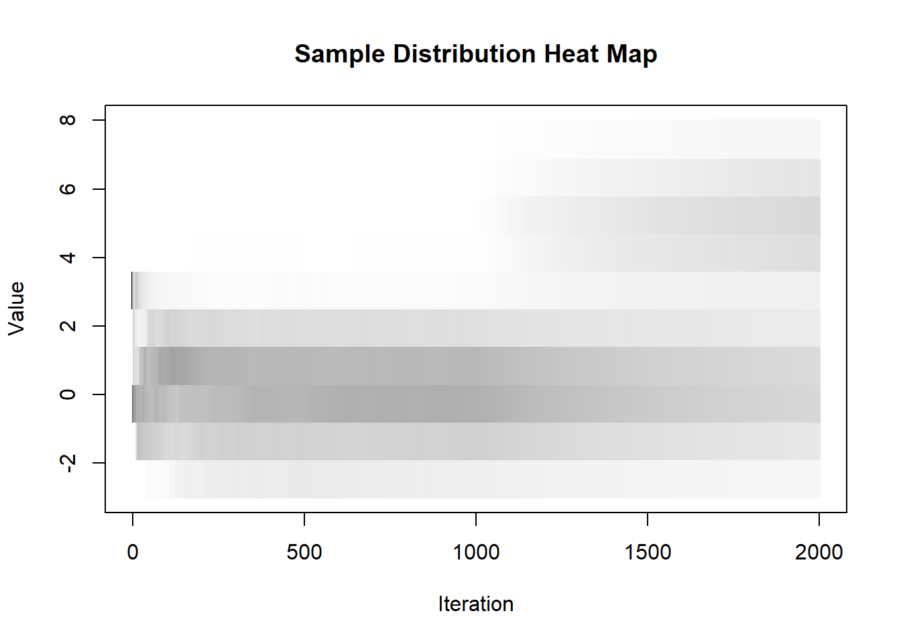
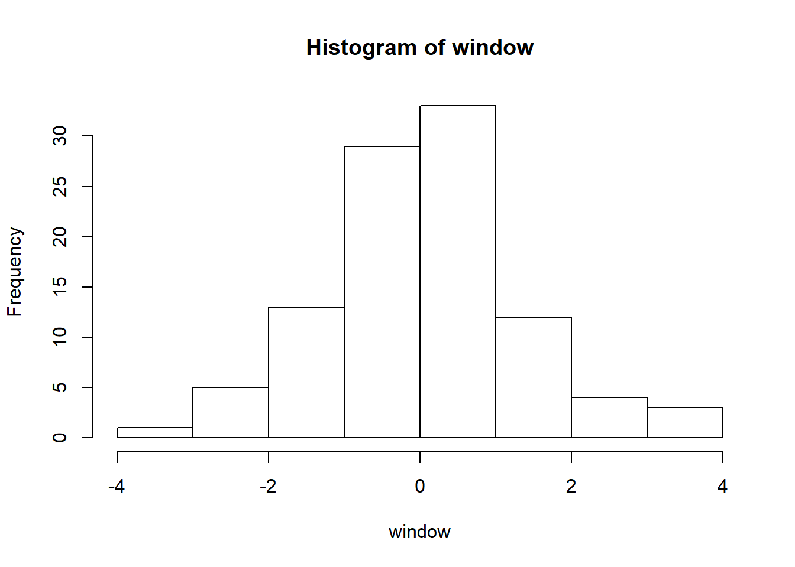

2.3 assignment Histogram (lesson 2)
2020-02-12
Using the stream package in R, keep current sample histogram of a 1-dimensional data stream using different window models.
keep histogram defining 8 bins and counting the values for each bin
## -- Attaching packages ----------------------------- tidyverse 1.2.1 --## v ggplot2 3.2.1 v purrr 0.3.2
## v tibble 2.1.3 v dplyr 0.8.3
## v tidyr 1.0.0 v stringr 1.4.0
## v readr 1.3.1 v forcats 0.4.0## -- Conflicts -------------------------------- tidyverse_conflicts() --
## x dplyr::filter() masks stats::filter()
## x dplyr::lag() masks stats::lag()# definitions
itera <- 2000
mu1 <- 0
set.seed(523)
stream1 <- DSD_Gaussians(k=1, d=1, mu=mu1, sigma=2)
# initialization
b1 <- b2 <- b3 <- b4<- b5 <- b6 <- b7 <- b8 <- 0
# iterative step
for (i in 1:itera){
if (get_points(stream1)[1,1] < -3) {
b1<-b1 + 1
} else if (get_points(stream1)[1,1] < -2){
b2<-b2 + 1
} else if (get_points(stream1)[1,1] < -1){
b3<-b3 + 1
} else if (get_points(stream1)[1,1] < 0){
b4<-b4 + 1
} else if (get_points(stream1)[1,1] < 1){
b5<-b5 + 1
} else if (get_points(stream1)[1,1] < 2){
b6<-b6 + 1
} else if (get_points(stream1)[1,1] < 3){
b7<-b7 + 1
} else {b8<-b8 + 1}
}make a data frame with the counts per bin and plot it
dt<-data.frame(bins = c("b1","b2","b3","b4","b5","b6","b7","b8"),
n = c(b1,b2,b3,b4,b5,b6,b7,b8))
ggplot(dt, aes(bins,n))+geom_bar(stat = 'identity')
histogram over a sliding window making a sliding window with 100 points
# definitions
w <- 100
# initialization
set.seed(523)
stream1 <- DSD_Gaussians(k=1, d=1, mu=mu1, sigma=2)
window <- NULL
# iterative step
for (i in 1:itera){
xi <- get_points(stream1)[1,1]
window <- c(window, xi)
if (length(window) > w) {
window <- window[-1]
}
}plot an histogram with the last window

histogram over a alpha fading sliding window
# definitions
itera <- 2000
set.seed(523)
stream1 <- DSD_Gaussians(k=1, d=1, mu=0, sigma=2)
w <- 100
eps <- 0.05
alpha <- eps^(1/w)
# initialization
b1 <- b2 <- b3 <- b4<- b5 <- b6 <- b7 <- b8 <- 0
# iterative step
for (i in 1:itera){
if (get_points(stream1)[1,1] < -3) {
b1<-b1 * alpha + 1
} else if (get_points(stream1)[1,1] < -2){
b2<-b2 * alpha + 1
} else if (get_points(stream1)[1,1] < -1){
b3<-b3 * alpha + 1
} else if (get_points(stream1)[1,1] < 0){
b4<-b4 * alpha + 1
} else if (get_points(stream1)[1,1] < 1){
b5<-b5 * alpha + 1
} else if (get_points(stream1)[1,1] < 2){
b6<-b6 * alpha + 1
} else if (get_points(stream1)[1,1] < 3){
b7<-b7 * alpha + 1
} else {b8<-b8 * alpha + 1}
}defining a data frame with the weighted counts and ploting a histogram
dt<-data.frame(bins = c("b1","b2","b3","b4","b5","b6","b7","b8"),
n = c(b1,b2,b3,b4,b5,b6,b7,b8))
ggplot(dt, aes(bins,n))+geom_bar(stat = 'identity')